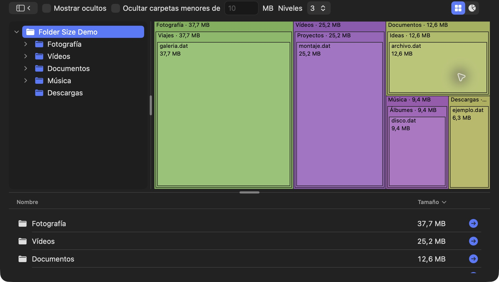

An app for macOS
Your space,
at a glance.
See what is taking up space on your Mac at a glance.
For macOS 15 or later

Two ways to look.
Choose the view that helps you find what you need.
Every folder in its place.
The treemap turns sizes into blocks: the more space a folder uses, the larger it appears.
Ready to explore.
Get Folder Size onto your Mac in a few steps.
- Download the app.Open the latest release on GitHub and download the DMG file.
- Drag it to Applications.Open the DMG and move Folder Size to the Applications folder.
- Choose a folder.Open the app and select the folder or volume you want to scan.
Some locations require additional macOS permissions. Full Disk Access can expand the scan, but does not guarantee access to every folder.
Folder Size is provided “as is”, without warranty. Check results and selected items before moving them to the Trash, and keep backups. To the extent permitted by law, the authors are not liable for loss or damage arising from its use.